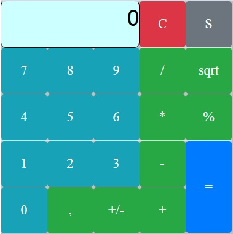
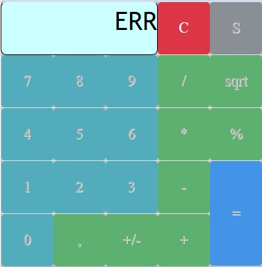
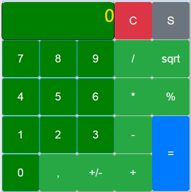
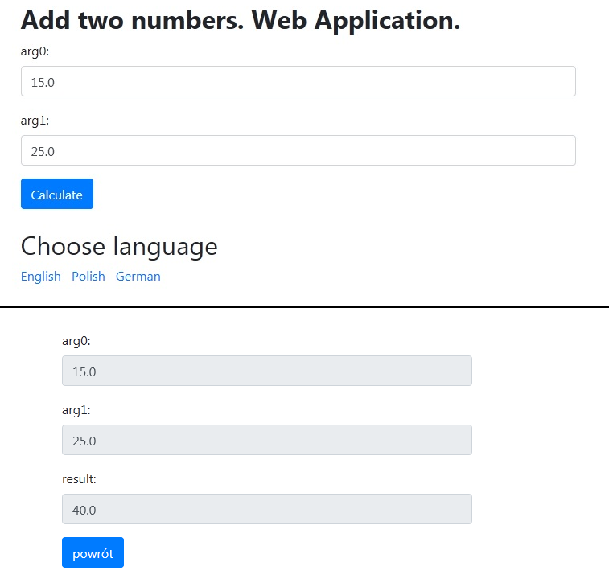
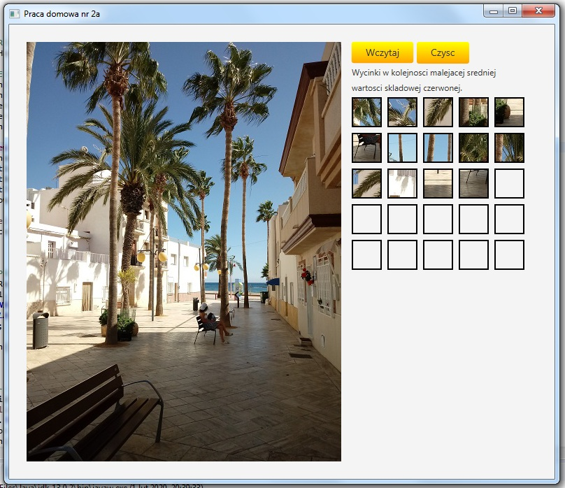
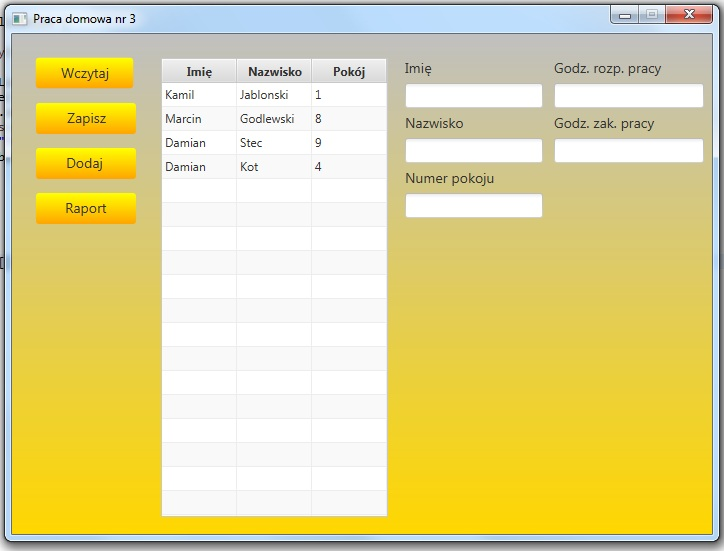

Moje programy
Calculator JSF with Settings
--- Wygląd aplikacji webowej ---

--- Błąd aplikacji np. przy dzieleniu przez zero ---

--- Wygląd aplikacji webowej po zmianie ustawień ---


Calculator with styles/font/colors settings using JavaEE, JavaServer Faces, Java 8, CSS, Bootstrap 4.5.0, HTML5/XHTML, XML and server Glassfish 5.

Kalkulator z ustawieniami styli/czcionek/kolorów używający JavaEE, JavaServer Faces, Java 8, CSS, Bootstrap 4.5.0, HTML5/XHTML, XML oraz serwer Glassfish 5.
Zobacz
{kind=link}
{kind=link}
{kind=link}
{kind=link}
Multilingual adding web application


Multilingual adding web application using: Java 8, JavaEE, HTML5, XML, Bootstrap 4.5.0, JSP and using server Glassfish 5.0.

Wielojęzykowa "dodająca" aplikacja webowa wykorzystująca: Java 8, JavaEE, HTML5, XML, Bootstrap 4.5.0, JSP i używająca serwera Glassfish 5.0.
Zobacz
{kind=link}
Counting Your Age

This simply program will show you how many months, days, hours, minutes and seconds you have.

Ten prosty program pokaże Ci ile masz miesięcy, dni, godzin, minut i sekund.
Zobacz
Sewer Pipe Gradient

Program calculating the gradient of the sewer pipe.
You have to enter your unit, first and second pipe level and pipe length.

Program obliczający spadek rury kanalizacyjnej.
Musisz wprowadzić jednostkę, pierwszy oraz drugi poziom/rzędną oraz długość rury.
Zobacz
Amount of Sewage

This application can calculate the sanitary sewage flow needed for your polish public health project.
This program can sum up all flows and give us the exact result.
Calculations are based on polish standards PN-EN 12056-2.

Ta aplikacja może obliczyć przepływ ścieków sanitarnych dla Twojego projektu "instalacji wod-kan".
Program potrafi zsumować wszystkie przepływy i dać nam dokładny wynik.
Obliczenia oparte są Polską Normą PN-EN 12056-2.
Zobacz
Responsive Web Design CSS style

Responsive Web Design CSS style using media queries.

Responsywny styl projektowy stron CSS oparty o "media queries".
Zobacz
HTML5 CSS3 table

This is an example of CSS3 style for HTML5 tables.

Przykład tabelki w HTML5 oparty o styl CSS3.
Zobacz
First JavaFX Project


My first Java FX Project. It's upgraded traditional Hello Application with GUI - Graphic User Interface.

Mój pierwszy projekt w JavaFX. Jest to ulepszona wersja tradycjnej aplikacji "Hello" z Graficznym Interfejsem Użytkownika.
Zobacz
CSS Golden Neon Button Effect

It is CSS style for golden neon button effect.

Styl CSS dla złotego, neonowego przycisku.
Zobacz
Shooting range


Shooting range application with 3 level shooting target: 100, 50 and 20 points.

Aplikacja "Strzelnica" z 3 poziomami celów: 100, 50 i 20 punktów.
Zobacz
My own history


JavaFX Application with short story. Live text typing app.

Aplikacja JavyFX z krótką historyjką. Aplikacja do wpisywania tekstu "na żywo".
Zobacz
CSS3 Button Styles

CSS3 Button Styles for HTML websites.

Style CSS3 przycisków dla stron internetowych HTML.
Zobacz
Encoding & decoding App


Homework 1 for subject INU from Warsaw University of Technology. Encoding and decoding application which can encode "AAAbbbCC" to "A3, b3, C2" and decode again from 2nd to 1st version.

Praca domowa 1 na przedmiot INU z Politechniki Warszawskiej. Kodująca i dekodująca aplikacja, która potrafi zakodować "AAAbbbCC" do "A3, b3, C2" i odkodować ponownie z drugiej do pierwszej wersji.
Zobacz
Image Cropping App


Homework 2a for subject INU from Warsaw University of Technology. Image cropping application which can cropp / cut 41x41 pixels image square and show it in arraylist next to canvas with my photo. There is also two buttons - Load new image from file but this option is "under construction" and second option to clear 25 small 41x41px images.

Praca domowa 2a na przedmiot INU z Politechniki Warszawskiej. Aplikacja wycinająca obrazki o wymiarze 41x41 pixeli i pokazująca je w arrayliście obok plótna z moim foto. Są również dwa przyciski - ładowanie nowego zdjęcia z pliku, ale ta opcja jest jeszcze "w budowie" i druga opcja do czyszczenia 25 małych 41x41px obrazków/wycinków.
Zobacz
{kind=link}
Employees list - MVC JavaFX App


Homework 3 for subject INU from Warsaw University of Technology. Employees list - JavaFX Application with MVC pattern which called Model View Controller. In these app you can add new employees by clicking "add button", load .txt file with list of employees, save new list to file and also generate a new report, sorted by work time.

Praca domowa 3 na przedmiot INU z Politechniki Warszawskiej. Lista pracowników - Aplikacja JavyFX ze wzorcem MVC - model, widok, kontroler. W tej aplikacji możesz dodać nowych pracowników klikając "przycisk dodaj", załadować plik tekstowy z listą pracowników, zapisać nową listę do pliku, jak również wygenerować nowy raport, posortowany w zależności od czasu pracy.
Zobacz
{kind=link}
{kind=link}
{kind=link}
JDBC First

First Java DataBase Connectivity Console Application

Pierwsza konsolowa aplikacja Java łącząca się z bazą danych.
Zobacz